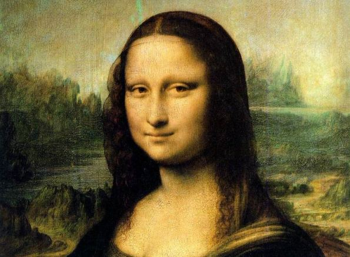

Using Pixel Colors
Using Paper.js you can easily work with the colors of individual pixels of Raster items.
Raster Size
The raster.size property of a raster specifies its size in pixels as a Size object. It doesn't matter if you transform an image, its size in pixels will stay the same. Changing this size means that the image will be re-interpolated. This will come in handy later when we want to iterate through the individual pixels of an image, since the average size of an image contains way too many pixels.
Colors of Pixels
To find the color of a specific pixel in a raster, we use raster.getPixel(x, y) and pass it the x and y offset of the pixel we want to look at. The raster.getPixel(x, y) function returns the color of the pixel as an Color.
The following script loops through the pixels of the selected raster and creates a circle shaped path for each of them and fills them with the color of the pixels.
Using Color Channel Values
Instead of directly using the colors returned from raster.getPixel(x, y), we can also use the values of their individual channels to do different things. The color channels of a color contain a value between 0 and 1.
The following script loops through the pixels of the selected raster and creates a grid of circle shaped paths of varying sizes depending on the gray value of their colors.
This code is very similar to the example above, but this time we don't fill the paths with the color we find when we call Raster.getPixel(x, y). Instead, we look at how dark the color is using color.gray, which is a value between 0 (white) and 1 (black) and use it to scale the paths.
